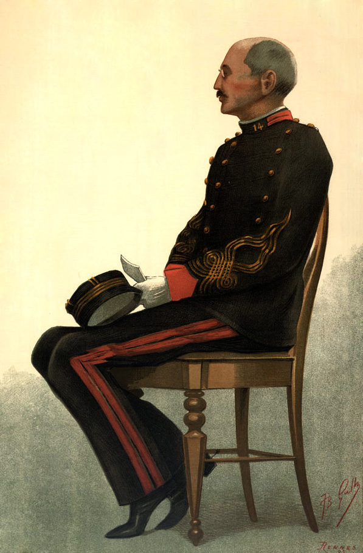

A42-POL-016 // HISTORICAL CLAIM REVIEW
The Dreyfus Affair: A Military Cover-Up
Assessment: The wrongful prosecution and subsequent military cover-up are established.


The precise allegation
French officer Alfred Dreyfus was wrongly convicted of treason in 1894. Military officials concealed exculpatory evidence and protected the true author of a key document, Ferdinand Walsin Esterhazy. This was a documented institutional cover-up rooted in antisemitism and military prestige, not a claim that Dreyfus himself belonged to a secret Jewish conspiracy.
Chronology and political context
Dreyfus was convicted in a closed military trial and sent to Devil's Island. In 1896 Colonel Georges Picquart identified evidence pointing to Esterhazy, but superiors suppressed the finding. Émile Zola's 1898 J'accuse! intensified the public crisis. A retrial again convicted Dreyfus in 1899 before a presidential pardon; he was exonerated and reinstated in 1906.
Primary historical record
Military files, the forged bordereau, Picquart's testimony, court records, and Zola's public intervention document the wrongful conviction and efforts to conceal error. The archive reveals both genuine intelligence concerns and manipulated evidence. Later legal proceedings overturned the case, while the original secret dossier was never adequately tested by Dreyfus's defense.
Corroboration and contrary evidence
Independent historians agree that Esterhazy authored the bordereau and that senior officers suppressed evidence. Picquart's discovery, corroborated by handwriting analysis and archival records, contrasts with the army's public defense. The affair involved intersecting political factions, but the core conspiracy was a cover-up within the military justice system rather than an orchestrated scheme by all anti-Dreyfusards.
What remains uncertain
The degree of coordination among individual officers and political leaders remains debated, as does what each official believed at each stage. The first trial's secrecy limits reconstructing the prosecution's assumptions. Antisemitism clearly shaped suspicion and public discourse, but it does not explain every officer's motives or every procedural decision.
Calibrated verdict
The wrongful prosecution and subsequent military cover-up are established. The case demonstrates institutional self-protection, antisemitism, and forged evidence; it does not support the original accusation against Dreyfus. Individual responsibility varies, but the documented suppression of exculpatory information makes this more than a mere historical misunderstanding.
What evidence could change this assessment
A newly discovered private file could refine which officials knowingly sustained the false case and when. Independent handwriting or archival evidence that challenged Esterhazy's authorship would alter a central factual conclusion. Any reappraisal must address the extensive body of evidence that led to Dreyfus's 1906 exoneration.
Sources and source limits
- Musée de l'Armée — The Dreyfus AffairMuseum synthesis and artifacts establish chronology; interpretive text is not a substitute for complete military files.
- Émile Zola, J'accuse! — Bibliothèque nationale de FranceDigitized primary intervention records a contemporary critique; Zola wrote as an advocate, not a neutral investigator.
- Ruth Harris, The Assumption of the Abbe (Oxford University Press)Scholarly account of social and political context; focuses on public culture as well as the legal record.